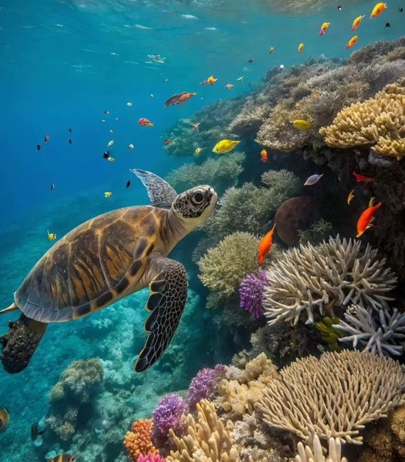
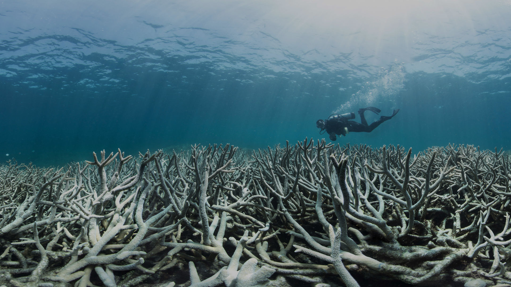
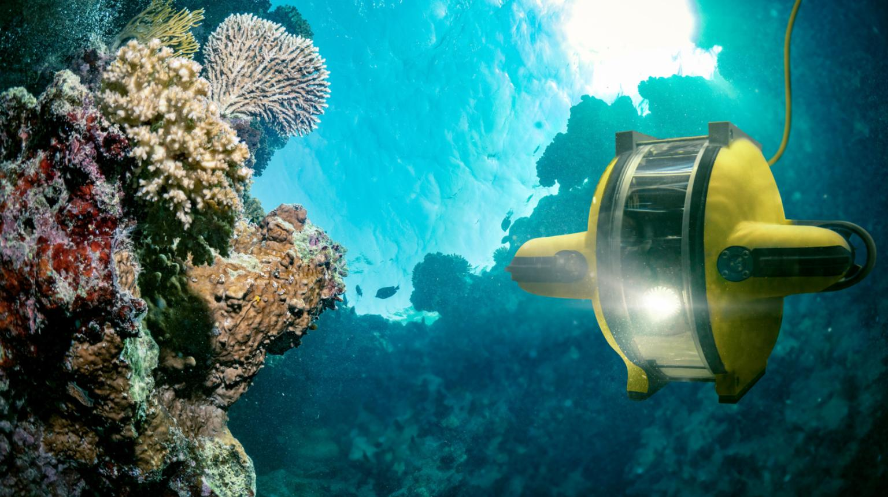
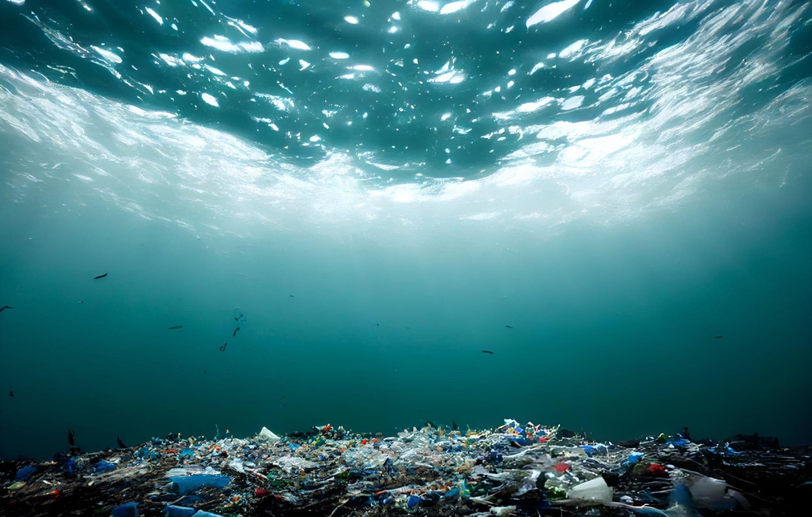
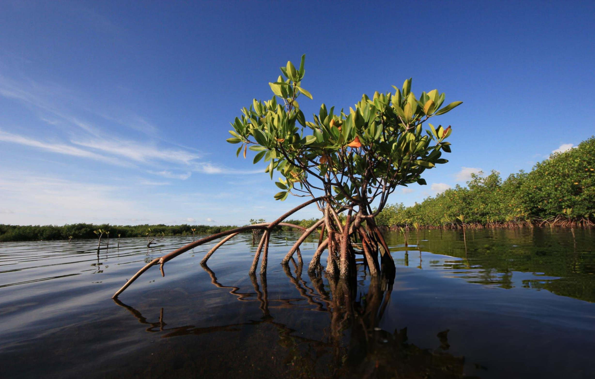
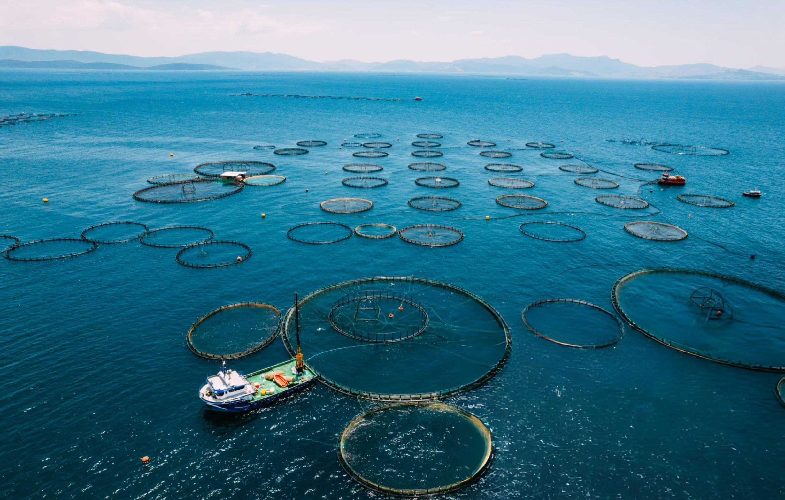
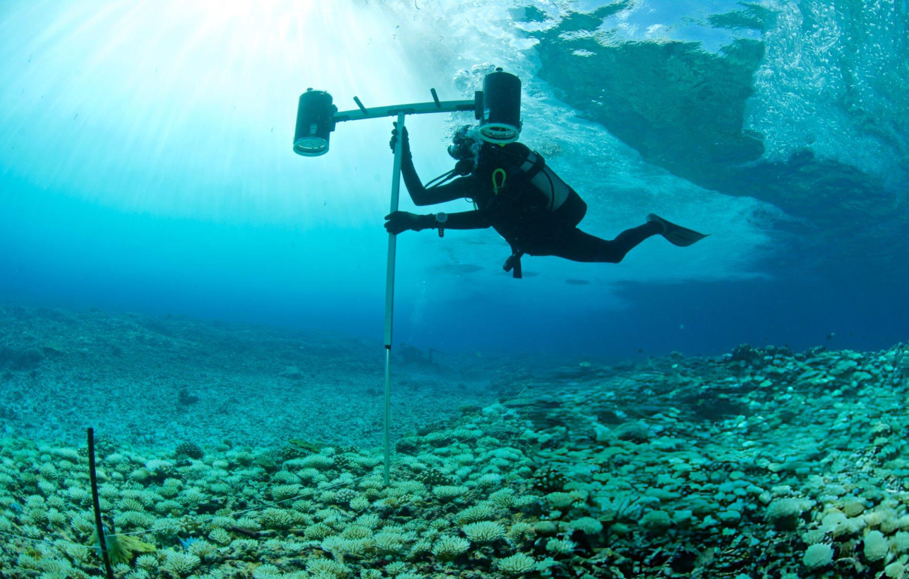

Our Mission
To protect and restore the health of our oceans by promoting sustainable marine practices, raising awareness about marine biodiversity, and empowering communities to safeguard life below water for generations to come.

Marine Wildlife Protection
Protecting marine wildlife is essential for maintaining healthy ocean ecosystems. By conserving species like turtles, dolphins, and reef fish, we ensure future generations can experience the richness of ocean life. Students and local communities are empowered to actively participate in conservation.
- Participate in local beach cleanups to protect habitats
- Support sustainable seafood choices to reduce overfishing
- Volunteer or fundraise for marine wildlife rescue programs

Climate Change and Oceans
Oceans are the planet’s climate regulators, but rising temperatures and acidification threaten marine life and coastal communities. Understanding these impacts helps students and local citizens take action to mitigate climate change and protect our seas.
- Reduce carbon footprint through sustainable transport and energy use
- Educate peers about the impact of climate change on oceans
- Support policies and initiatives that protect marine ecosystems

Innovations in Ocean Conservation
Technology and research are transforming how we preserve oceans. From cleanup innovations to coral restoration projects, students and community members can participate in pioneering solutions to safeguard marine ecosystems.
- Engage in citizen science programs to monitor local water quality
- Adopt and promote sustainable fishing and consumption practices
- Support research and technology initiatives that restore ocean habitats
Main Topics
Marine Pollution

- Stop the Stream -
Prevent pollution at the source by identifying plastic hotspots and advocating for waste-free zones in your local community.
Protecting Coastal life

- Guard the Guardians -
Shield our shorelines by tracking local marine species and supporting the restoration of vital mangrove and coral ecosystems.
Sustainable Fishing

- Eat for the Ocean -
Protect marine balance by choosing certified sustainable seafood and supporting small-scale, artisanal fishers over industrial fleets.
Ocean Literacy

- Pixels for Purpose -
Drive global change by using interactive digital tools to turn complex marine science into powerful advocacy and awareness.